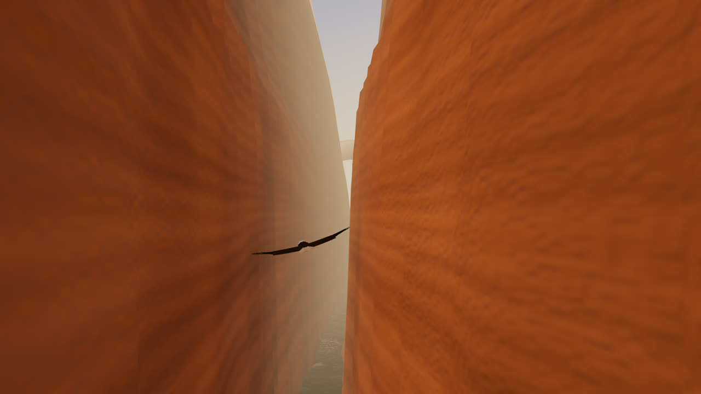
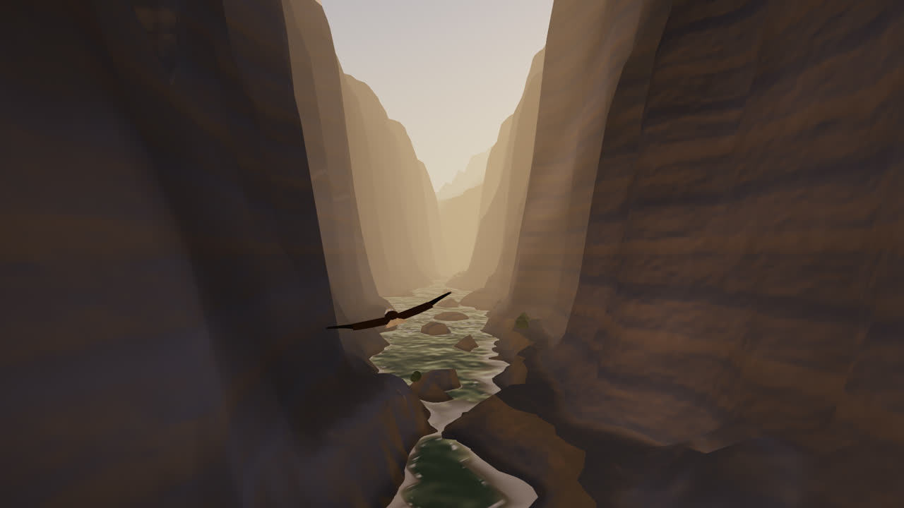

<title>Eagle Canyon Flights</title>
<meta name="claude:viewport-fit-sides" content="cover">
<link rel="stylesheet" href="https://fonts.googleapis.com/css2?family=Fraunces:opsz,wght@9..144,600&family=Inter:wght@400;600&display=swap">
<style>
/* layout: one reading column; the haze question breaks out into a wide 3-column picture grid */
:root {
  --bg: #f6f1ea; --fg: #2a1d16; --muted: #6d5c50; --card: #fffaf3; --line: #e2d5c6; --accent: #b4532a; --accent-fg: #fff;
  --display: "Fraunces", Georgia, serif; --text: "Inter", system-ui, sans-serif;
}
@media (prefers-color-scheme: dark) { :root:not([data-theme="light"]) { --bg: #1b1411; --fg: #f1e6db; --muted: #b9a596; --card: #251c17; --line: #3d2f27; --accent: #e07a48; --accent-fg: #1b1411; color-scheme: dark } }
:root[data-theme="dark"] { --bg: #1b1411; --fg: #f1e6db; --muted: #b9a596; --card: #251c17; --line: #3d2f27; --accent: #e07a48; --accent-fg: #1b1411; color-scheme: dark }
body { background: var(--bg); color: var(--fg); font: 16px/1.55 var(--text); }
main { max-width: 1180px; margin: 0 auto; padding-block: 32px 64px; padding-left: max(16px, env(safe-area-inset-left, 0px)); padding-right: max(16px, env(safe-area-inset-right, 0px)); display: grid; gap: 40px; }
.col { max-width: 68ch; }
h1, h2 { font-family: var(--display); font-weight: 600; text-wrap: balance; margin: 0; line-height: 1.15; }
h1 { font-size: clamp(30px, 5vw, 46px); }
h2 { font-size: 24px; }
p { margin: 0; }
.stack { display: grid; gap: 12px; }
.lede { color: var(--muted); font-size: 17px; }
code, .path { font: 14px/1.4 ui-monospace, Menlo, monospace; background: var(--card); border: 1px solid var(--line); border-radius: 6px; padding: 2px 6px; user-select: all; overflow-wrap: anywhere; }
.hero { width: 100%; border-radius: 10px; display: block; }
.grid { display: grid; grid-template-columns: auto repeat(3, minmax(0, 1fr)); gap: 8px; align-items: center; overflow-x: auto; }
.grid img { width: 100%; border-radius: 6px; display: block; }
.grid .h { font-weight: 600; text-align: center; font-size: 14px; }
.grid .r { font-size: 13px; color: var(--muted); writing-mode: vertical-rl; transform: rotate(180deg); text-align: center; }
.choices { display: flex; flex-wrap: wrap; gap: 8px; }
.choices label { display: flex; align-items: center; gap: 8px; padding: 8px 14px; border: 1px solid var(--line); border-radius: 999px; background: var(--card); cursor: pointer; }
.choices input { accent-color: var(--accent); }
.choices label:has(input:checked) { border-color: var(--accent); box-shadow: inset 0 0 0 1px var(--accent); }
.rec { font-size: 12px; letter-spacing: .06em; text-transform: uppercase; color: var(--accent); font-weight: 600; }
textarea { width: 100%; min-height: 64px; box-sizing: border-box; font: inherit; padding: 10px; border-radius: 8px; border: 1px solid var(--line); background: var(--card); color: var(--fg); }
button { font: 600 16px var(--text); padding: 12px 22px; border-radius: 8px; border: 0; background: var(--accent); color: var(--accent-fg); cursor: pointer; justify-self: start; }
button:focus-visible, input:focus-visible, textarea:focus-visible { outline: 3px solid var(--accent); outline-offset: 2px; }
#status { color: var(--muted); font-size: 14px; }
table { border-collapse: collapse; font-size: 14px; font-variant-numeric: tabular-nums; min-width: 560px; }
td, th { text-align: left; padding: 6px 10px; border-bottom: 1px solid var(--line); vertical-align: top; }
.scroll { overflow-x: auto; }
.pass { color: #2f7d3b; font-weight: 600; } .fail { color: #b3261e; font-weight: 600; }
:root[data-theme="dark"] .pass, .pass { }
.places { display: grid; grid-template-columns: repeat(auto-fill, minmax(260px, 1fr)); gap: 14px; }
.places figure { margin: 0; display: grid; gap: 6px; }
.places img { width: 100%; border-radius: 8px; display: block; aspect-ratio: 16 / 9; object-fit: cover; }
.places figcaption { font-size: 14px; color: var(--muted); }
.places figcaption b { color: var(--fg); }
details { border-top: 1px solid var(--line); padding-top: 20px; }
summary { cursor: pointer; font-family: var(--display); font-size: 22px; font-weight: 600; }
.q { display: grid; gap: 14px; padding-top: 24px; border-top: 1px solid var(--line); }
@media (max-width: 640px) { .grid { grid-template-columns: repeat(3, minmax(120px, 1fr)); } .grid .r, .grid .corner { display: none; } }
</style>

<main>
  <section class="stack col">
    <h1>Eagle Canyon, second flight</h1>
    <p class="lede">You asked for more diversity in the terrain. The canyon is now four times bigger (8 km across) and changes as you fly: a slot, a stone bridge, a wide basin of temples, a rapids gorge, a waterfall, and a pine forest on a higher rim. One question below: fly for five minutes, then rate it again.</p>
  </section>

  <section class="stack col">
    <h2>How to try it</h2>
    <p>Open this file in Chrome: <span class="path">~/Documents/eagle-canyon/index.html</span>, then click Fly.</p>
    <p>Same controls as before. New: the keys <b>1</b> to <b>8</b> jump to the places below, so you can start anywhere. To find them yourself, follow the river: it leads through the slot, under the bridge and into the basin.</p>
  </section>

  <section class="stack">
    <div class="col stack"><h2>The places</h2><p>Stills from the game, each with its key.</p></div>
    <div class="places">
      <figure><figcaption><b>1 · The canyon.</b> Where you start: layered walls, buttes, side canyons.</figcaption></figure>
      <figure><figcaption><b>2 · The narrows.</b> A slot 330 m deep and about 15 m wide at the water.</figcaption></figure>
      <figure><figcaption><b>3 · The stone bridge.</b> Where the slot opens. Fly under it or over it.</figcaption></figure>
      <figure><figcaption><b>4 · The basin.</b> More than 2 km across, full of tiered temples.</figcaption></figure>
      <figure><figcaption><b>5 · The gorge.</b> A deep inner gorge with rapids and boulders.</figcaption></figure>
      <figure><figcaption><b>6 · The waterfall.</b> From a side canyon with blue-green pools above it.</figcaption></figure>
      <figure><figcaption><b>7 · The high rim.</b> 110 m higher on the east side, with a pine forest.</figcaption></figure>
      <figure><figcaption><b>8 · Into the sun.</b> Up the canyon at the end of the afternoon.</figcaption></figure>
    </div>
  </section>

  <section class="q col" id="q-keep">
    <h2>After five minutes, how much do you want to keep flying?</h2>
    <p>Fly for five minutes and stop whenever you like. Then pick: 1 means "I was done before five minutes", 5 means "I didn't want to stop". Last time you gave it 3.</p>
    <p class="rec">The prediction to beat: 4 or more</p>
    <div class="choices" role="radiogroup" aria-label="Want to keep flying, 1 to 5">
      <label><input type="radio" name="keep" id="keep-1" value="1"> 1</label>
      <label><input type="radio" name="keep" id="keep-2" value="2"> 2</label>
      <label><input type="radio" name="keep" id="keep-3" value="3"> 3</label>
      <label><input type="radio" name="keep" id="keep-4" value="4"> 4</label>
      <label><input type="radio" name="keep" id="keep-5" value="5"> 5</label>
    </div>
    <textarea id="keep-note" placeholder="Which place did you like most? What made you stop, or keep going? (optional)"></textarea>
    <button id="save" type="button">Save my answer</button>
    <p id="status" aria-live="polite">Loading saved answer…</p>
  </section>

  <section class="q" id="numbers">
    <div class="col stack">
      <h2>What we measured</h2>
      <p>Predictions written before building, measured on this MacBook in Chrome at full 1080p with the haze at 600 m.</p>
    </div>
    <div class="scroll"><table>
<thead><tr><th>#</th><th>Prediction</th><th>Measured</th><th>Result</th></tr></thead>
<tbody>
<!--R2ROWS-->
</tbody></table></div>
  </section>

  <details>
    <summary>First flight (your answers are kept)</summary>
    <div class="stack col" style="margin-top:16px">
      <p>Haze: you picked 600 m, now the default. Keep flying: 3 of 5 ("I need more diversity in my terrain"). What exploring should give next: all five ideas (places that fill in a map, a nest, riding the air, fishing, time of day). Those wait for later runs.</p>
      
    </div>
  </details>
</main>

<script>
// run 2 saves to its own doc; the first run's answers stay in answers/eagle-1
const DOC = 'answers/eagle-2';
const $ = (id) => document.getElementById(id);
const status = $('status');
let db = null;
function read() {
  const k = document.querySelector('input[name="keep"]:checked');
  return { keep: k ? +k.value : null, keepNote: $('keep-note').value };
}
function fill(a) {
  if (!a) return;
  if (a.keep) { const i = $('keep-' + a.keep); if (i) i.checked = true; }
  $('keep-note').value = a.keepNote || '';
}
(async () => {
  const timer = setTimeout(() => { if (!db) status.textContent = 'Saving is not available in this view. You can still read the page.'; }, 10000);
  db = await window.claude?.use?.('db');
  clearTimeout(timer);
  if (!db) { status.textContent = 'Saving is not available in this view. You can still read the page.'; $('save').disabled = true; return; }
  try { const s = await db.doc(DOC).get(); if (s && s.exists) { fill(s.data()); status.textContent = 'Your saved answer is filled in.'; } else status.textContent = 'Nothing saved yet.'; }
  catch { status.textContent = 'Could not load your saved answer.'; }
})();
$('save').addEventListener('click', async () => {
  if (!db) return;
  status.textContent = 'Saving…';
  try { await db.doc(DOC).set({ ...read(), savedAt: new Date().toISOString() }); status.textContent = 'Saved.'; }
  catch (e) { status.textContent = 'Could not save: ' + (e && e.message || 'unknown error') + '. Try again.'; }
});
</script>
